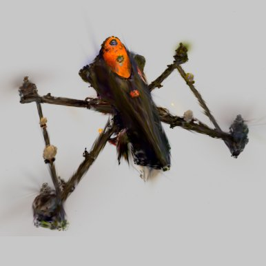
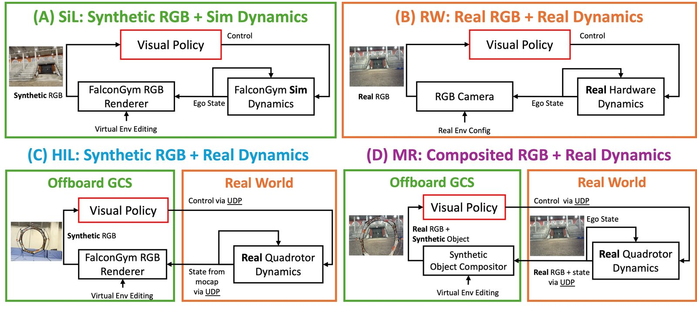
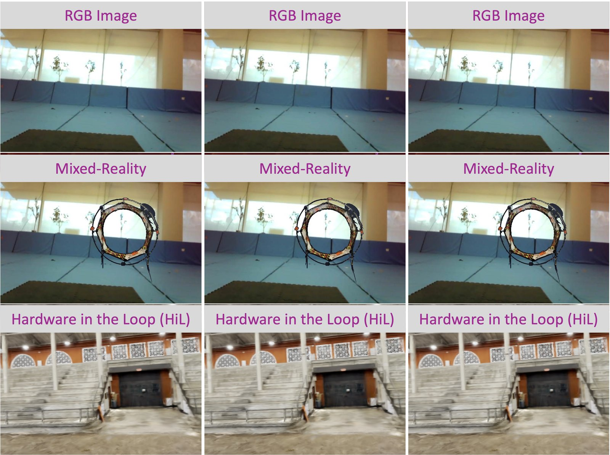
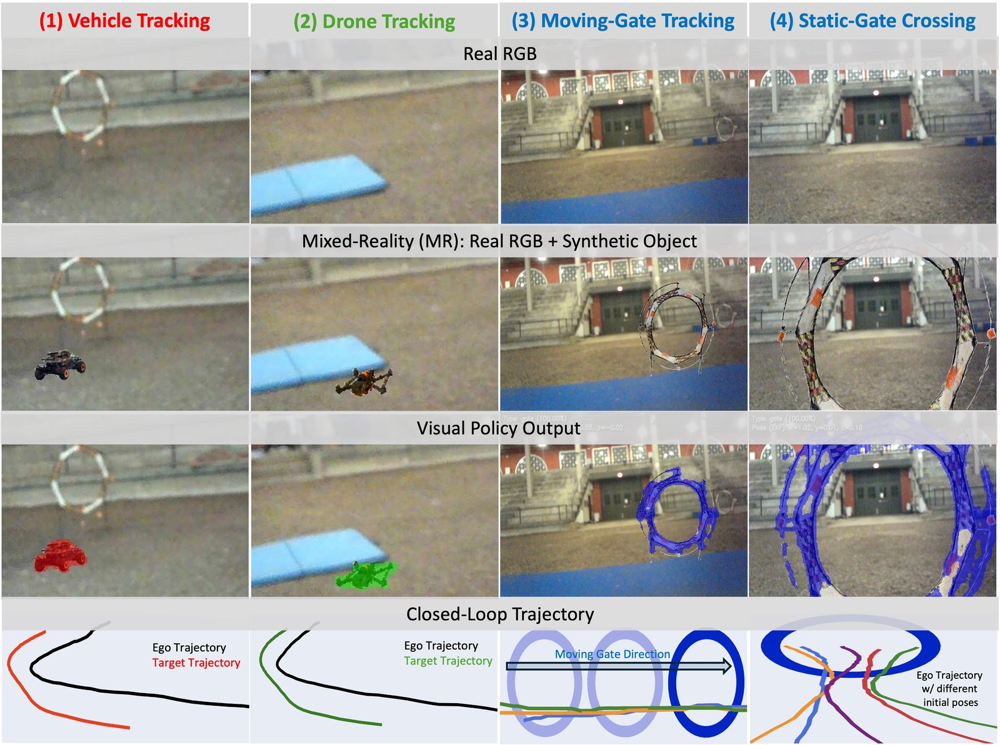
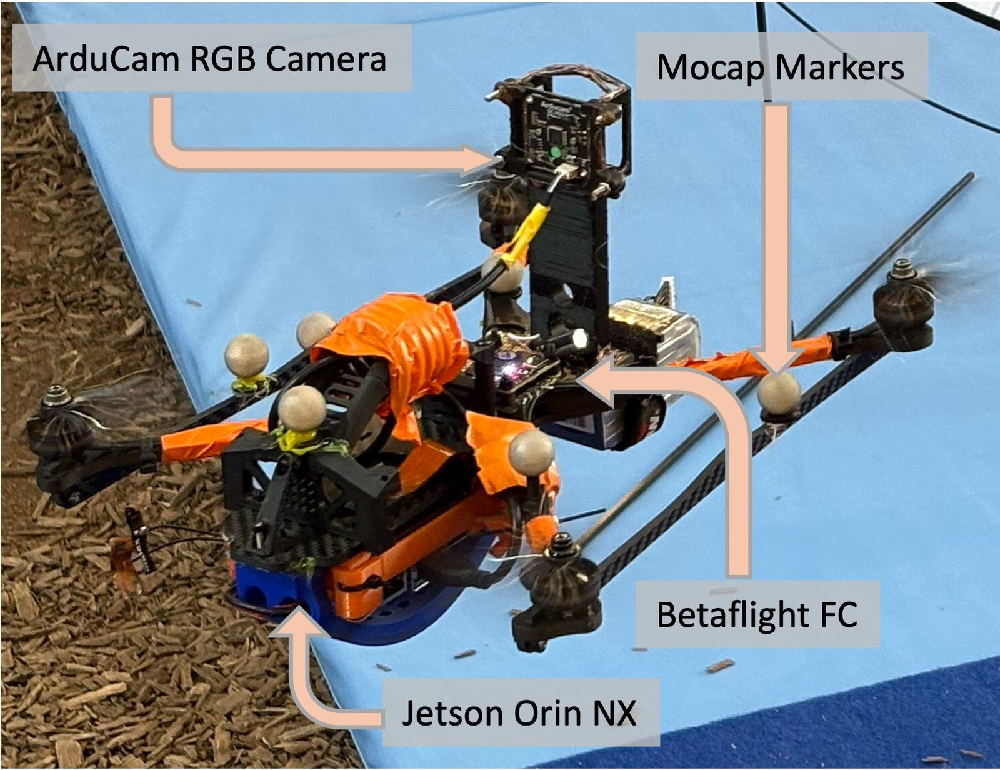
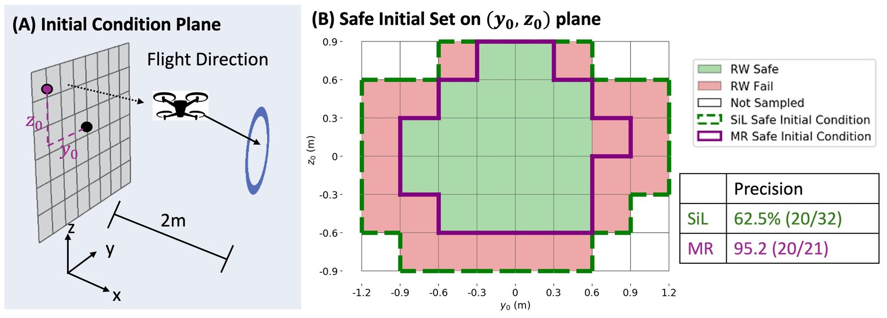
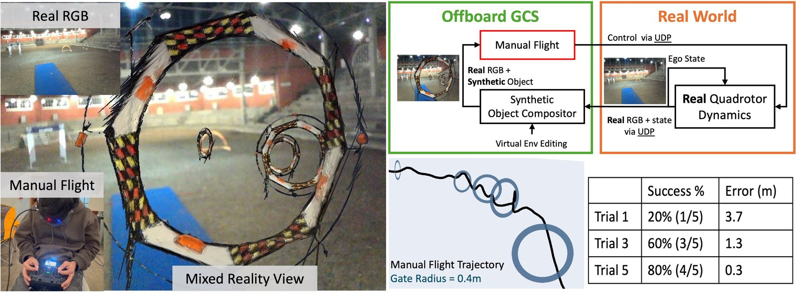

A real quadrotor flies through Gaussian-splat obstacles composited into its own camera stream, so failure boundaries can be probed without hitting anything.

Jetson Orin NX onboard, ArduCam RGB; virtual gates rendered with 3D Gaussian splatting.
Safely evaluating vision-based aerial policies is challenging because simulation can hide real quadrotor dynamics, while real-world failures can cause collisions and costly repairs. We present FalconWorld, a safe, realistic, and low-latency hardware-in-the-loop mixed-reality (MR) framework for testing quadrotor visual autonomy and bridging this gap. FalconWorld closes the visual-policy loop through a real quadrotor operating in the physical world, while MR renders safety-critical obstacles with 3D Gaussian Splatting and composites them into the onboard RGB stream in real time.
We evaluate FalconWorld on four visual aerial autonomy tasks: F1-tenth tracking, quadrotor tracking, moving-gate tracking, and static-gate crossing. Across these tasks, FalconWorld achieves 21 ms HiL and 28 ms MR closed-loop latency, with 10/10 success in trials with different initial conditions and task objectives.
In safe failure-boundary testing, MR improves safe-set precision from 62.5% in pure simulation to 95.2%, showing that virtual obstacles with real dynamics can identify unsafe initial conditions before physical gate trials. Lastly, we demonstrate that the same low-latency MR setup can support safe manual pilot flight training with a real quadrotor and virtual gates.

FalconWorld architecture: a real quadrotor's onboard RGB stream composited with 3DGS-rendered virtual obstacles at 28 ms closed-loop latency.





% Citation will be available upon publication. For now, please reference:
% FalconWorld: Low-Latency Mixed Reality for Safe Visual Aerial
% Autonomy Evaluation. Under review, 2026.